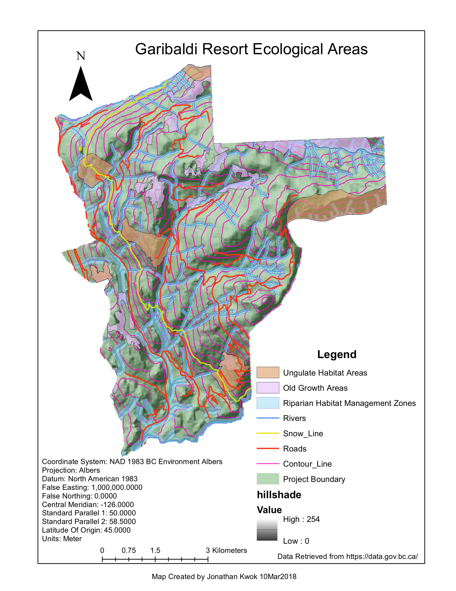

Stanley Park has witnessed community eviction, human-wildlife conflicts, and cultural assimilation, severing a social connection between humans and the local environment.
I want to re-design a section in Stanley Park that allows an area for shelter and rest, an area of landscape appreciation and education, and enhance an already-existing area of cultural and historical reflection.
Focusing on these 3 factors will allow visitors and locals to come together and help foster dialogue in reconciliation.
A case study looking at mangrove cover and human interactions in Madagascar, Africa.

Taking a combined national-level and project-based approach, what follows is evidence to support our overall position that Panama has partially met its objectives and qualifies for REDD+ funding.
Mosquitoes are well studied in other parts of the world such as tropical and subtropical regions.
Using that information of prefered and potential habitat sources, a map of the Fraser Valley and Howe Sound is created to suggest potential habitat sources for mosquitoes based on moisture availability.

According to Canadian Buisnessand CBC, the BC province has given its approval for developing a ski resort for Garibaldi at Squamish.
Many affected stakeholders have filed against the proposed project, holders such as Whistler Blackcomb, First Nations, and environmental professionals such as applied biologist.